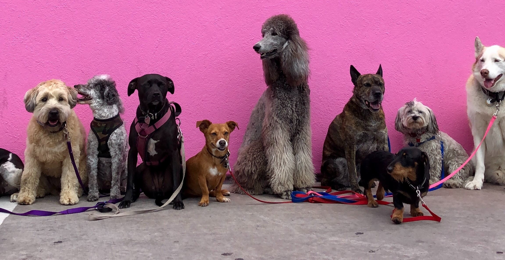

Welcome to our adoption centre
We rehome pets in Ireland. Please find informations below about what to expect during the rehoming process
- Our rehoming centre is open on Friday, Saturday, Sunday and Monday from 1-3pm. Outside of these hours, we operate on an appointment-only basis for potential adopters.
- Making Plans - If you are hoping to welcome a pet into your life, please plan ahead and ensure that it will fit into your lifestyle long-term.
- Pre-Adoption Talk-You can attend our pre-adopting tallk online from the comfort and safety of your own home. You'll get a chance to ask questions of our team member and find out more about how to help your new pet settle in.
- First Date-Depending on your new pet's needs,we'll sometimes arrange for you to meet them before they come home and get to know them a little better.You may need to meet them multple times before they join you at home.
- Happy Life -You are welcome to get in touch with our team for advice and support at any stage following adoption and we love to hear how our former residlents are getting on!We now also offer fun,affordable,online Pet training classes, where you can learn how to set your new pet up for success by teaching them valuable life skills.
(text source: Dogtrust.ie )